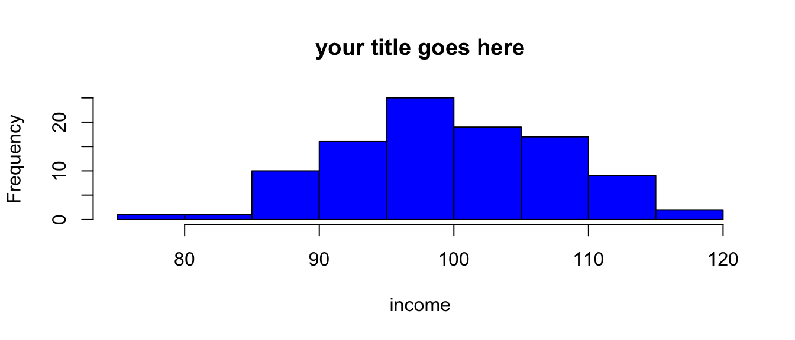
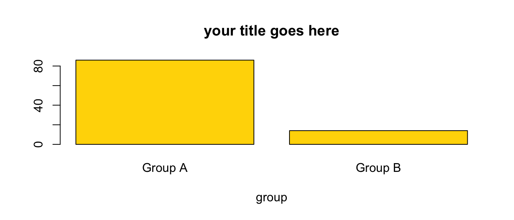
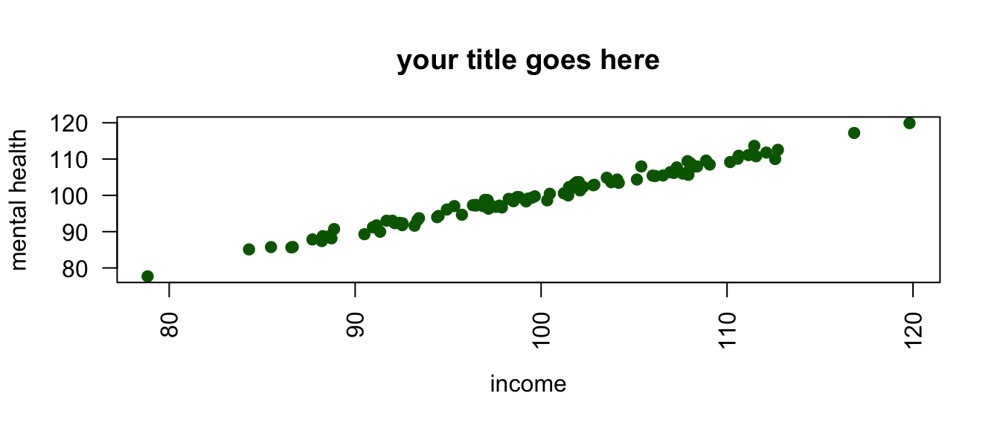

load("the/path/to/mydata.Rdata") # data in R format
library(haven) # library for importing data
mydata <- read_sav("the/path/to/mySPSSfile.sav") # SPSS
mydata <- read_dta("the/path/to/myStatafile.dta") # Stata
library(readxl) # library for importing Excel files
mydata <- read_excel("the/path/to/mySpreadsheet.xls")
save(mydata, file = "mydata.RData") # save in R formatA Quick Introduction to R
1 Why Use R?
R has a reputation for being difficult to learn, and a lot of that reputation is deserved. However, it is possible to teach R in an accessible way, and a little bit of R can take you a long way.
R is open source, and therefore free, statistical software that is particularly good at obtaining, analyzing and visualizing data.
R Commands are stored in a script or code file that usually ends in .R, e.g. myscript.R. The command file is distinct from your actual data, stored in an .RData file, e.g. mydata.RData.
A great deal of data analysis and visualization involves the same core set of steps.
Given the fact that we often want to apply the same core set of tasks to new questions and new data, there are ways to overcome the steep learning curve and learn a replicable set of commands that can be applied to problem after problem. The same 5 to 10 lines of R code can often be tweaked over and over again for multiple projects.
\[\text{have a question} \rightarrow \text{get data} \rightarrow \text{process and clean data} \rightarrow\] \[\text{visualize data} \rightarrow \text{analyze data} \rightarrow \text{make conclusions}\]
2 Get R
R is available at https://www.r-project.org/. R is a lot easier to run if you run it from RStudio, http://www.rstudio.com.
3 Get Data
Data often comes from other types of data files like SPSS, Stata, or Excel. Especially in beginning R programming, getting the data into R can be the most complicated part of your program.
4 Process and Clean Data
The $ sign is a kind of “connector”. mydata$x means: “The variable x in the dataset called mydata”.
mydata$x[mydata$x == -9] <- NA # missing to NAR makes a strong distinction between continuous numeric variables that measure scales like mental health or neighborhood safety, and categorical factor variables that measure non-ordered categories like religious identity or gender identity.
Many statistical and graphical procedures are designed to recognize and work with different variable types. You often don’t need to use all of the options. e.g. mydata$w <- factor(mydata$z) will often work just fine. Changing variables from factor to numeric, and vice versa can sometimes be the simple solution that solves a lot of problems when you are trying to graph your variables.
mydata$w <- factor(mydata$z, # original numeric variable
levels = c(0, 1, 2),
labels = c("Group A", "Group B", "Group C"),
ordered = TRUE) # whether order matters
mydata$z <- as.numeric(mydata$w) # factor to numeric5 Visualize Data
5.1 Histogram
png
2 hist(mydata$x, # what I'm graphing
main = "your title goes here", # title
xlab = "income", # label for x axis
col = "blue") # color
Tip
You often don’t need to use all of the options. e.g. hist(mydata$x) will work just fine.
5.2 Barplot
barplot(table(mydata$z), # what I'm graphing
names.arg = c("Group A", "Group B"), # names
main = "your title goes here", # title
xlab = "group", # label for x axis
col = "gold") # color
Tip
You often don’t need to use all of the options. e.g. barplot(table(mydata$z)) will work just fine.
5.3 Scatterplot
plot(mydata$x, mydata$y, # plot x and y
main = "your title goes here", # title
xlab = "income", # label for x axis
ylab = "mental health", # label for y axis
pch = 19, # Plot CHaracter, 19 is filled dots
las = 2, # LAbel Style, 2 is "perpendicular"
col = "darkgreen") # color
Tip
You often don’t need to use all of the options. e.g. plot(mydata$x, mydata$y) will work just fine.
Tip
When scatterplots have fewer dots than you think they should have, often due to “over-printing”, adding some random noise, or “jittering” the dots in the scatterplot may help: plot(jitter(mydata$y, factor = 5000) ~ mydata$x). Experiment with different sizes of factor.
6 Analyze Data: Descriptive Statistics
summary(mydata$x) # for continuous or factor variables Min. 1st Qu. Median Mean 3rd Qu. Max.
78.11 94.74 100.47 101.05 107.55 127.08 table(mydata$z) # especially suitable for factor variables
1 2
77 23 For another approach to summarizing your data, try:
library(skimr)
skim(mydata)
skim(mydata$x)